post_1 ( 2024年11月 25日 ):
my dad got cancer my life since then i've managed to wreck my life
after i contracted covid from him it got all that much worse
ocd anxiety doubt paranoia
to anyone going through the same shit
you're not alone
it's all in your brain and how you selectively percieve information
just do shit with your pain and don't allow this to manifest itself in unproductive non generative ways
_realizatons so far_
* keep your blood glucose low, this helps avoid overthinking and freezing up
> do hard cardio
> walk alot
> keep digestion at peak performance
* language is inadequete prioritize internal intuition and work output
* don't be scared
> move forward without doubt if you fall at least you fell, that's better than not moving
> stop trying to self preserve
> live every day as if it's your last and head towards your final days with pride and dignity
* don't hate yourself
> don't enduldge in shameful behavior that reinforces hating yourself
> dont hate the world live for it
> give everything you have to people you love and exapnd this loving radius
* remember why you're here and if you don't know figure it out
> don't buy bullshit self help shit figure it out on your own
* it's all in your head so make your head a productive place to be
> train your body and mind (physical an immaterail realm share information)
else you let them win
but they will always lose because evil always loses
in a sense they already know they're playing a losing game
because they hate themselves more than anyone hates them
today in a hotel room i make this site and post it live
maybe i will get peace this way or maybe i alleviate some suffering of another person reading this
and those two are probably the same thing because the world moves as one
journal:
so what if I am a cyclical being
I will embrace this pain and head fourth with it
learning it's behavior to use to my advantage
something really bad happened last year
and will probably happen again this next year
but I should be able to deal with it accordingly instead of always running away
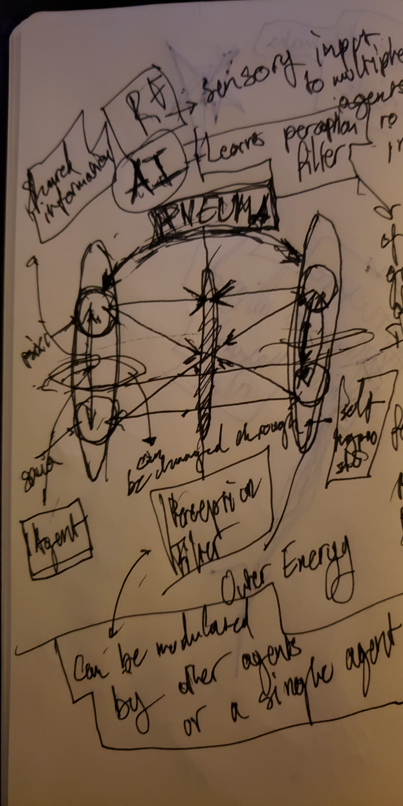
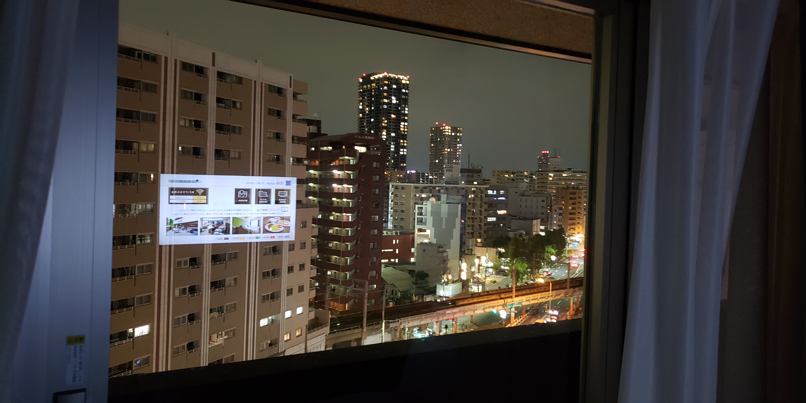
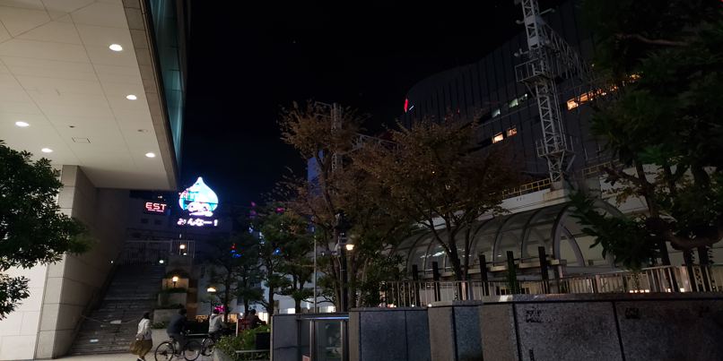
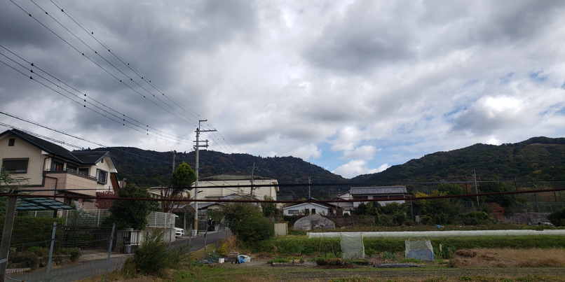
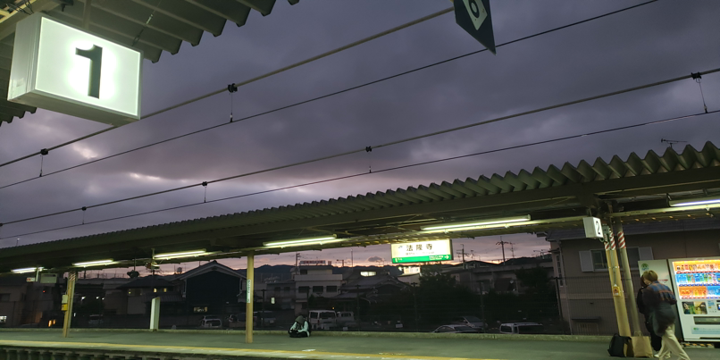
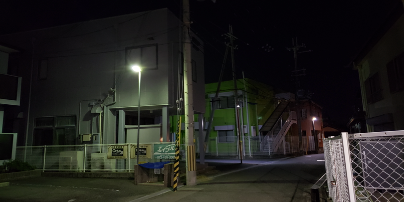
post_2 ( 2024年11月 26日 ) bad voice internal conversation / journal but keeping it here anyway:
everything got wet | sleepless day
journal:
leaned into it too much to the point of where I took the wrong decision w/ regards to serving others around me
headed more towards death than I should have in a selfish way not because it served others
It would've served my friends and my family if I'd taken a bus went to where I had to be earlier
not soaked my things so I'd be able to contact them
all the decisions that were selfish piled one on top of the other
when you stray from your path it becomes way easier to stray alot
instead of walking in the rain I should've just taken the bus like a normal person
on low sleep it's alot easier to get distracted by animal instincts
haven't figured out a way to combat besides maybe music and caffeine but how long before I become caffeine adapted have to take a break and then start the cycle over again with a caffeine abstenance week
this cyclicality makes me so depressed
How are people able to be consistent I envy that
I guess i should build a stronger ethical basis
now as I write this it's my 32nd hour awake
I look at the bed as if it is my tomb
getting in it means I wake up a cortisol infused mess of a person that needs 5 hours to adjust to their surroundings
i just work out but it gets very boring after a while
wait they don't love you like I love you
I need to find the mind pathways that can surpass these animal instinct circuits
but maybe the animal instinct circuit is to stay awake because its afraid
maybe there is no animal instinct circuit its all just human circuit and human is ape that can speak to itself and therefore speak to the world and it's everpresent permeating substrate the pneuma
so i should shut that one up and go to bed
at least at some point this cycle will have to break because my brain is getting destroyed
but on low sleep the demons go away everything seems to quiet down and I'm able to live normally
maybe what's really tiring is me being afraid to go to sleep
if im going to stay awake I should do so with no doubt in my head that I should be asleep
and if im going to sleep I should do so without doubt that I'll wake up a mess.
status:
out of a way to communicate with anyone back home
laptop is fucked will fix all this shit tomorrow and go again
some book thoughts:
I thought the concept of adding two sinosoids together of the same frequnecy combines their amplituded to combine a 3rd sinosoid
it's like when two people combine of the same frequency
I wonder if there's more to that word when it comes to people vibrating than just parlance
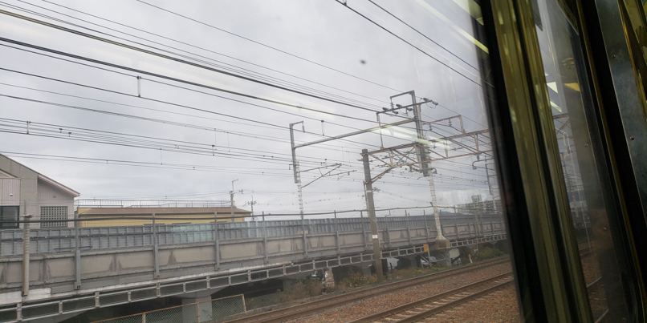
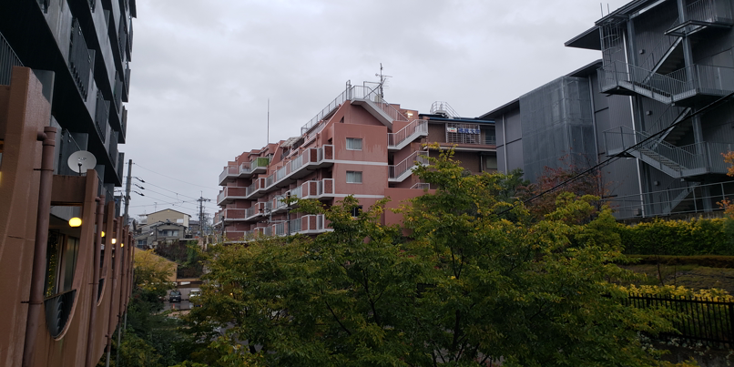
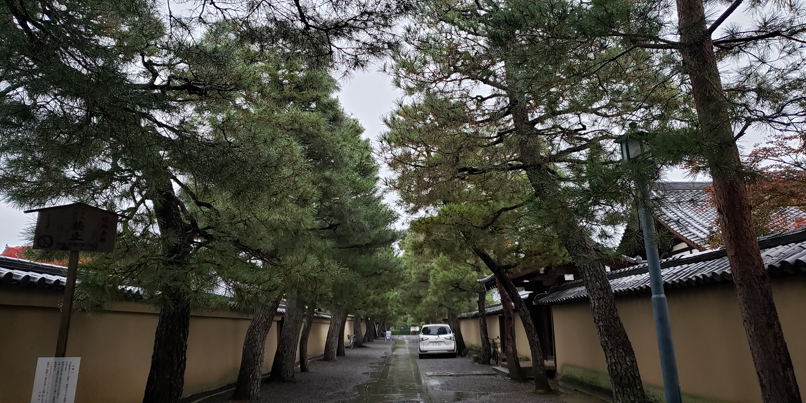
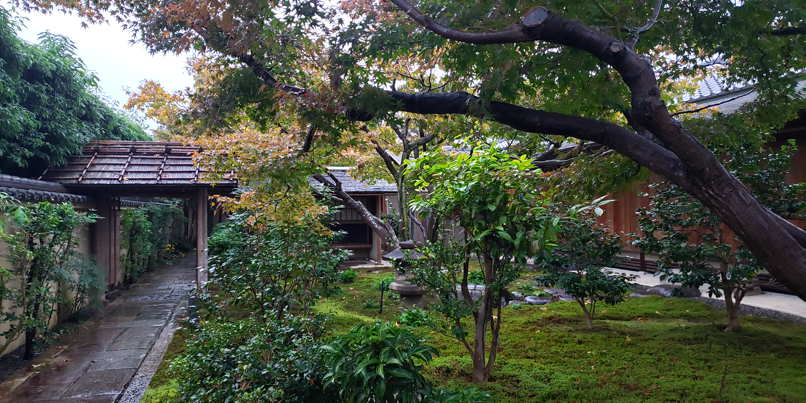
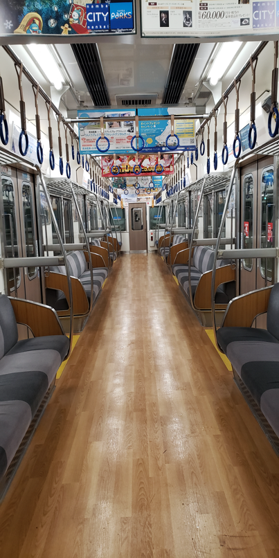
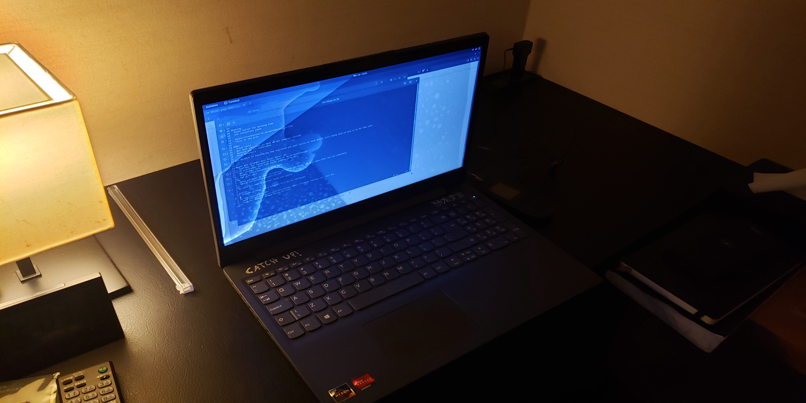
post_3 ( 2024年11月 27日 ) retrospective_voice:
in this shit state of the world you really need to find
another person that can make life less hellish for you
luckily i think i've found at least one person
but you have to be fully honest
they have to see you for who you are and if they can accept that
then you have a real friend
and even if they betray you it's okay because at least you put out
what you put out together
i've been without a team for so long
and when i did have a team i was still alone
now i feel like we are two sine waves operating on the same frequency
maybe with differnt PHIs but that's okay because atleast
we're composing another sine wave
not an aliased to shit mess
yesterday we stayed without sleep and we drifted both in the physical sense and in the mind sense
we got distracted
took to many stops in the mind and on our walk to the temple
because we straid from the heavenly way
when on low sleep we need to find a way to stay on the heavenly path
else we risk reversing any good we do whilst on the path on good sleep
japan is being attacked by something
consumerism
every corner there is a new seven eleven filled with western pastry products filled with carbs and fat
why is the nation allowing this diabetes capture to happen ?
why is the system giving me angels all of a sudden
maybe i decided to give myself them
because i got tired of being sad
i think i've found the solution
i will not fear the sleep schdule fluctuations
thus I will not ever be on low sleep
these fears were imposed on me by father about adhering to a consistent schedule,
when the world in it's current state does not call for it
it calls for action
i will go to sleep when I've done my work and when I feel tired
the ideal for me is to wake up at mid afternoon
and stay up until 6am then sleep for 6 - 8 hours
during the night i'll be able to focus on code since there will be no distractions
i'll be limited to 7 eleven food so i'll also save money
remembering:
systems always change from the outside
so if you want to change yourself you need to change your outside
then get to a state when you make yourself to operate for a positive pneuma
that's why i came here
so now that I want to force myself to sleep i have to remind myself that my father is not here
everything is ok
i'm literally in the coolest place ever able to live the coolest experience of my life
why is it that im still anxious as if im locked in my room in back home ?
there's really no reason besides hard wiring
it's all in your head
it's all what you chose to percieve and think about
main principles:
always head froward towards death
do what's best for the world
make every decision based on these two principles
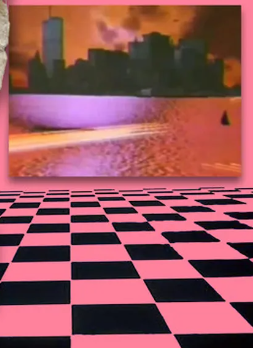
post_4 ( 2024年11月 30日 ) good voice:
it's always important that we have something to lookforward to
even if it doesn't exist create it
everynight you go to bed have a plan for tomorrow
when you have a plan, especially when it's based around the well being of others
all is well
when you think of yourself, the eternal converstation starts you freeze
you stop moving
keep moving
shut the endless eternal conversation
find the path and head fourth without hesitation
and so the cellular automata principle will play out to create a viable path forward
a viable path is a good path
a good path is the best path
a perfect path is no path
post_5 ( 2024年11月 30日 ) good voice:
don't get charmed by negative omens
they're not there to tell you that bad luck is coming
they're a welcome reminder to stay out of your head
and to keep heading forward no matter what
post_6 ( 2024年11月 30日 ) good voice:
post_2/3_revised:
>either don't stay on low sleep
>or have such strong engrained ethics that you are unable to slip up under conditions where it's easy for the mind to drift into base selfish insticts and desires
(when this happens it is quite easy to fall into a landslide of unproductive behavior that instead of serving what you truly care about serves many industries)
that pray on this kind of behavior to keep their fake value industries alive
we can forgive them though
they don't make decisions on their own
they market tells them what to do
and the market isn't controlled by genuine value
it's controlled by extraction mechanisms (in it's current state)
and what it extracts is ultimately your soul
>or just have your own schedule that is taylored to your purpose not following regular sleeping patterns of others if you can afford to
(although in any case you should be adaptable and be able to operate in any conditions imposed by your environment)
post_7 ( 2024年11月 30日 ) good voice:
it's all your cortisol pathway but when you figure that out
then it's not
__________
all this rushing
you think it helps you move forward fast
but it's just self defense against actually following through with what's infront of you
it's still just self preservation presenting itself in different form
what really moves you forward is confrontation
and dealing with it
if you hate living so much then why are you so afraid of self sacrifice ?
post_8 ( 2024年11月 30日 ) good voice:
stop scratching old wounds it's over
and its better this way because if it weren't better then it wouldn't have been over yet
next time don't lie to yourself and follow your heart
because your heart is not your own
it is that of the eternal spirit provided you've make yourself available to it by going to bed a dead person and being reborn in the morning
spend it all but whilst being composed
die with a calm expression
wake up again and start without hesitation at peace with the cold
keep moving or be scared and stay the same truly dying
a shameful death
post_9 ( 2024年12月 03日 ) good voice:
everything you do is just a thing you've done before
but that's okay keep moving
_DONATE_
ETH: 0x20d623e3bdd7a8428707858d8485fff3dd912A76